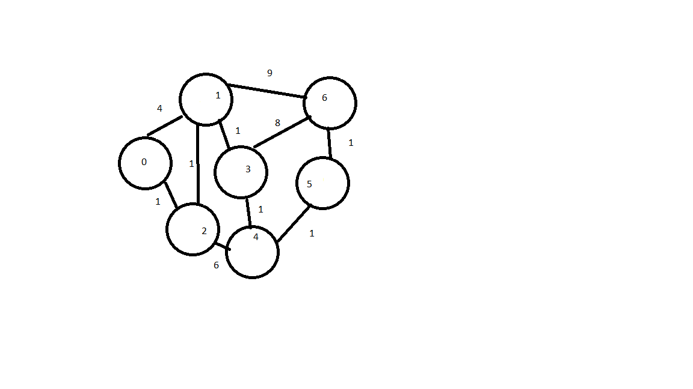

<body>
	
	
	<script>	
		
		// One example via
		//http://www.geeksforgeeks.org/greedy-algorithms-set-6-dijkstras-shortest-path-algorithm/
		
		var minDistance = function(dist, sptSet, V) {
			var min = Number.MAX_SAFE_INTEGER;
			var min_index;
			
			for(var v = 0; v < V; v++) {
				if(sptSet[v] == false && dist[v] <= min) {
					min = dist[v];
					min_index = v;
				}
			}
			
			return min_index
		}
		
		var dijsktraAlgorithm = function(graph, start) {
		var dist = [],
			sptSet = [];
			V = graph.length;
			
			for(var i = 0; i < V; i++) {
				dist[i] = Number.MAX_SAFE_INTEGER;
				sptSet[i] = false;
			}
			
			dist[start] = 0;
			
			for(var count = 0; count < (V-1); count++ ) {
				var u = minDistance(dist, sptSet, V);
				sptSet[u] = true;
				
				for(var v = 0; v < V; v++) {
					if(!sptSet[v] && graph[u][v] && dist[u] != Number.MAX_SAFE_INTEGER && (dist[u]+graph[u][v] < dist[v])) {
						dist[v] = dist[u] + graph[u][v];
					}
				}
				
			}
		
		return dist;
		
		}
		
		var dijsktraArray = [
			[0, 4, 1, 0, 0, 0, 0], 
			[4, 0, 1, 1, 0, 0, 9],
			[1, 1, 0, 0, 6, 0, 0],
			[0, 1, 0, 0, 1, 0, 8],
			[0, 0, 6, 1, 0, 1, 0],
			[0, 0, 0, 0, 1, 0, 1],
			[0, 9, 0, 8, 0, 1, 0]
		]
		
		
		//console.log(dijsktraArray)
		//console.log(dijsktraArray[0])
		console.log(dijsktraAlgorithm(dijsktraArray, 0))
	</script>
</body>